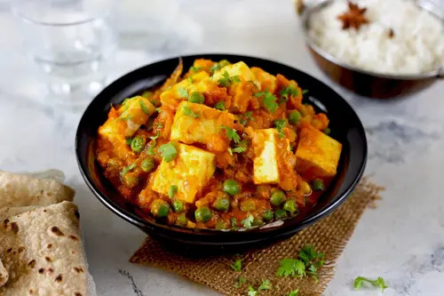

Matar Paneer Recipe

Description
Matar Paneer is a popular Indian dish of cottage cheese aka Paneer and
green peas cooked in a spicy and flavorsome curry
This matar-paneer is a filling, delicious and hearty vegetarian dinner
with tons of North Indian flavours. This is a rich, spicy, creamy and
tasty curry that your entire family will enjoy if served over steamed
basmati rice, any flavored rice, Butter naan, chapati or flatbread of your
choice
Ingredients
- Cottage Cheese
- Green Peas
- Garam Masala
- Whole Spices
- Kasuri Methi
- Onions
- Tomatoes
- Ginger and Garlic
- Cashews
- Cream
Steps
-
Heat a pan and add i tbsp oil. When the oil turns hot, add
- 1 to 2 green caramoms (optional)
- 1 inch ginger (chopped)
- 3 garlic cloves (chopped)
- Saute just for a minute
-
Add 1 cup cubed onions. saute them until they turn pink to light golden.
-
Then add 1½ cup chopped tomatoes, ½teaspoon salt and 12 whole
cashew nuts.
-
Saute for 2 to 3 mins. Cover the pan. Cook on a medium flame until the
onions and tomatoes turn mushy. Turn off the stove.
-
Cool this mixture then add ¼ to ⅓ cup curd (yogurt) for a
rich and tangy flavour (optional) and grind it to a smooth puree without
adding water(make sure it doesn't have grits)
-
Now heat a pan with 2 tbsps oil.
- Add 1 inch cinnamon
- Add a small bay leaf
- Half teaspoon cumin seeds
- Fry them for a minute
-
Reduce the heat to low.
- Add ¼teaspoon turmeric,
- ¾ to 1 tbsp red chilli powder,
- ¾ to 1 tbsp garam masala
- ½ to ¾ tbsp coriander powder
- Mix well (do it on a low heat so that spices doesn't get burnt)
-
Pour smooth onion tomato puree (if not then pass it through a strainer
to make it smooth)
-
Saute all of these until the mixture comes together & turns thick. Keep
stirring often.
-
Add ¾ cup boiled green peas and pour 1 to 1¼ cups water to
make a gravy.
-
Mix well and cook until the gravy thickes then add crushed 1 tbsp kasuri
methi.
- Add 250 grams cottage cheese and cook just for 1 to 2 mins.
-
Turn off the heat. Add chopped coriander leaves and 3 to 4 tbsp cream.
Mix well
- Now its ready to be served. Enjoy.
Return to Top
Return to Home